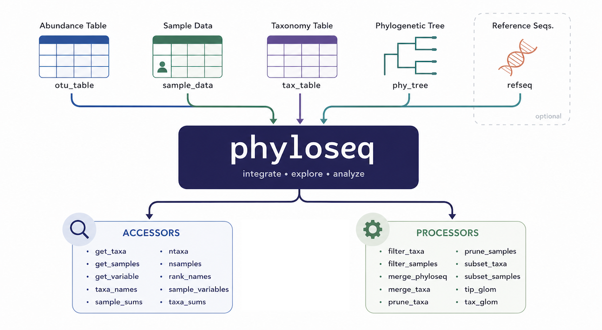
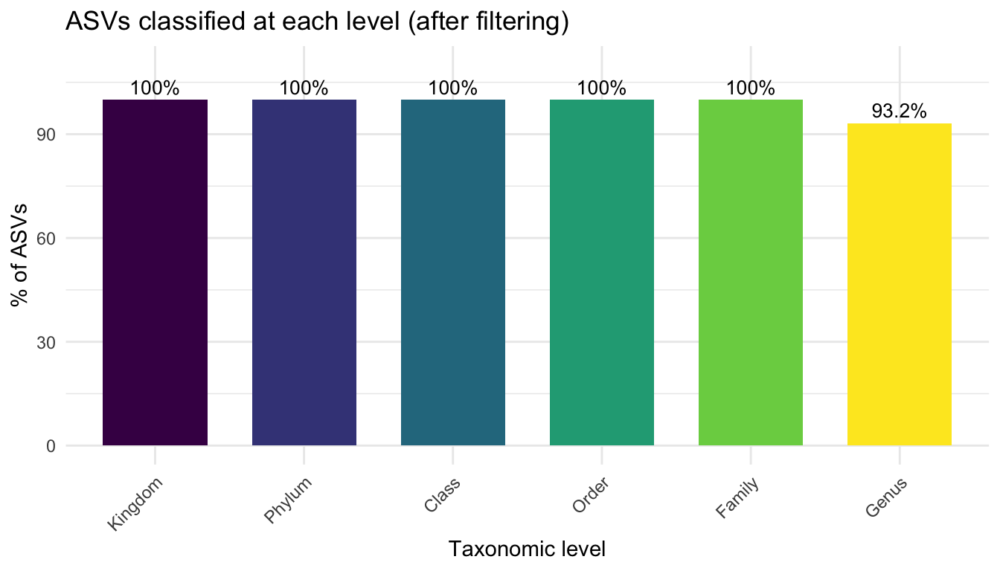

# Parse sample names into experimental variables
metadata <- data.frame(
SampleID = sample.names,
row.names = sample.names,
stringsAsFactors = FALSE
) %>%
mutate(
Group = case_when(
startsWith(SampleID, "Lactobacillus") ~ "Lactobacillus",
startsWith(SampleID, "Spontaneous") ~ "Spontaneous",
startsWith(SampleID, "Commercial") ~ "Commercial",
startsWith(SampleID, "Control") ~ "Control",
TRUE ~ "Unknown"
),
Timepoint = case_when(
grepl("_H24_", SampleID) ~ "H24",
grepl("_H48_", SampleID) ~ "H48",
grepl("_W1_", SampleID) ~ "W1",
grepl("_W2_", SampleID) ~ "W2",
TRUE ~ NA_character_
),
Replicate = as.integer(sub(".*_R(\\d+)$", "\\1", SampleID)),
IsControl = Group == "Control"
)
# Verify that metadata rows match the seqtab rows
stopifnot(all(rownames(seqtab.nochim) %in% rownames(metadata)))
metadata7 Phyloseq Integration and Export
7.1 What is phyloseq?

phyloseq is an R package that combines three data tables into a single, consistent object:
| Component | Function | Description |
|---|---|---|
| OTU table | otu_table() |
ASV × sample abundance matrix |
| Taxonomy table | tax_table() |
ASV × taxonomic level annotations |
| Sample data | sample_data() |
Sample-level metadata |
| Reference sequences | refseq() |
The actual DNA sequences (optional) |
Keeping everything in one object prevents accidental misalignment between tables and gives access to a rich set of analysis and visualisation functions.
7.2 Prepare metadata
We derive metadata directly from the sample names, which encode the experimental design (Group_Timepoint_Replicate).
7.3 Build the phyloseq object
# Ensure tables are in the same order
metadata_matched <- metadata[rownames(seqtab.nochim), ]
seqtab_matched <- seqtab.nochim[rownames(metadata_matched), ]
stopifnot(all(rownames(metadata_matched) == rownames(seqtab_matched)))
otu <- otu_table(t(seqtab_matched), taxa_are_rows = TRUE)
tax <- tax_table(taxa)
sd <- sample_data(metadata_matched)
ps <- phyloseq(otu, sd, tax)
# Store the actual DNA sequences in the phyloseq object
dna <- Biostrings::DNAStringSet(taxa_names(ps))
names(dna) <- taxa_names(ps)
ps <- merge_phyloseq(ps, dna)
# Rename ASVs to simple identifiers (ASV1, ASV2, ...)
taxa_names(ps) <- paste0("ASV", seq(ntaxa(ps)))
psphyloseq-class experiment-level object
otu_table() OTU Table: [ 1091 taxa and 29 samples ]
sample_data() Sample Data: [ 29 samples by 5 sample variables ]
tax_table() Taxonomy Table: [ 1091 taxa by 6 taxonomic ranks ]
refseq() DNAStringSet: [ 1091 reference sequences ]7.4 Filter unwanted taxa
16S amplification can co-amplify mitochondrial and chloroplast 16S-like sequences from plant and eukaryotic cells. These are not bacteria and must be removed before downstream analyses.
ps_filtered <- ps %>%
subset_taxa(
(is.na(Family) | !grepl("mitochondria", Family, ignore.case = TRUE)) &
(is.na(Order) | !grepl("mitochondria", Order, ignore.case = TRUE)) &
(is.na(Genus) | !grepl("mitochondria", Genus, ignore.case = TRUE)) &
(is.na(Family) | !grepl("chloroplast", Family, ignore.case = TRUE)) &
(is.na(Order) | !grepl("chloroplast", Order, ignore.case = TRUE)) &
(is.na(Order) | Order != "Chloroplastida")
)
cat("ASVs removed (mitochondria / chloroplasts):",
ntaxa(ps) - ntaxa(ps_filtered), "\n")ASVs removed (mitochondria / chloroplasts): 26 7.4.1 Remove ASVs unclassified at Family level
For most downstream community analyses we require at least Family-level classification. ASVs that could not be classified even at this level are removed.
ASVs removed (unclassified at Family): 27 cat("Final ASV count:", ntaxa(ps_final), "\n")Final ASV count: 1038 Total reads in final dataset: 4674036 7.5 Taxonomic composition overview
tax_df <- as.data.frame(tax_table(ps_final))
levels <- c("Kingdom", "Phylum", "Class", "Order", "Family", "Genus")
total <- ntaxa(ps_final)
tax_classif <- data.frame(
Level = factor(levels, levels = levels),
Pct = sapply(levels, function(lv) {
round(100 * sum(!is.na(tax_df[[lv]]) & tax_df[[lv]] != "") / total, 1)
})
)
ggplot(tax_classif, aes(x = Level, y = Pct, fill = Level)) +
geom_col(width = 0.7) +
geom_text(aes(label = paste0(Pct, "%")), vjust = -0.4, size = 3.5) +
scale_fill_viridis_d() +
labs(title = "ASVs classified at each level (after filtering)",
x = "Taxonomic level", y = "% of ASVs") +
theme_minimal() +
theme(axis.text.x = element_text(angle = 45, hjust = 1),
legend.position = "none") +
ylim(0, 110)
7.6 Filtering summary
cat("\n=== FILTERING SUMMARY ===\n")
=== FILTERING SUMMARY ===cat("After denoising and chimera removal: ", ntaxa(ps), "ASVs\n")After denoising and chimera removal: 1091 ASVscat("After removing mitochondria/chloroplasts: ", ntaxa(ps_filtered), "ASVs\n")After removing mitochondria/chloroplasts: 1065 ASVscat("After removing unclassified at Family: ", ntaxa(ps_final), "ASVs\n")After removing unclassified at Family: 1038 ASVscat("Samples in final dataset: ", nsamples(ps_final), "\n")Samples in final dataset: 29 Total reads in final dataset: 4674036 7.7 Export outputs
# Phyloseq object (for downstream analysis in R)
saveRDS(ps_final, "phyloseq_object.rds")
# ASV ID → sequence mapping
asv_sequences <- data.frame(
ASV_ID = taxa_names(ps_final),
Sequence = as.character(refseq(ps_final)),
stringsAsFactors = FALSE
)
write.csv(asv_sequences, "asv_sequences_map.csv", row.names = FALSE)
# ASV taxonomy + abundance table
asv_counts <- as.data.frame(otu_table(ps_final))
tax_table_df <- as.data.frame(tax_table(ps_final))
write.csv(cbind(tax_table_df, asv_counts),
"asv_tax_table.csv", row.names = TRUE)
# Sample metadata + per-sample read counts per ASV
sample_abundances <- as.data.frame(t(otu_table(ps_final)))
sample_metadata <- as.data.frame(sample_data(ps_final))
write.csv(cbind(sample_metadata, sample_abundances),
"samples_with_abundances.csv", row.names = TRUE)
cat("Outputs saved:\n")Outputs saved:cat(" phyloseq_object.rds\n") phyloseq_object.rdscat(" asv_sequences_map.csv\n") asv_sequences_map.csvcat(" asv_tax_table.csv\n") asv_tax_table.csvcat(" samples_with_abundances.csv\n") samples_with_abundances.csv7.8 What’s next?
The phyloseq_object.rds file is the starting point for all downstream analyses:
- Alpha diversity — species richness, Shannon entropy, Faith’s PD
- Beta diversity — Bray-Curtis or UniFrac distances, ordination (PCoA, NMDS)
- Differential abundance — DESeq2, ANCOM-BC, MaAsLin2
- Taxonomic bar charts — relative abundance at Phylum or Family level
- Network analysis — co-occurrence networks using SpiecEasi or SPRING
These topics are covered in the downstream analysis tutorial.